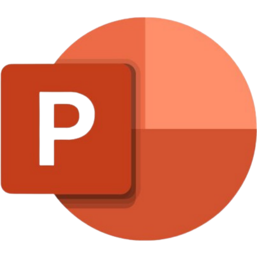

Microsoft PowerPoint
Microsoft PowerPoint digunakan untuk membuat file presentasi dalam bentuk slide.
PowerPoint berfungsi :
- Untuk menunjukan kesiapan dalam melakukan presentasi
- Memudahkan audiens untuk memahami pesan yang anda sampaikan
- Memudahkan untuk menyampaikan ide, data dan fakta
A. Cara Membuat Presentasi Yang Baik
- Memilih Judul Yang Tepat
- Sesuaikan Template
- Memilih Font
- Sederhana Tapi Komunikatif
- Gantikan Bullets Dengan Icon
- Ganti Timeline Dengan Smartart